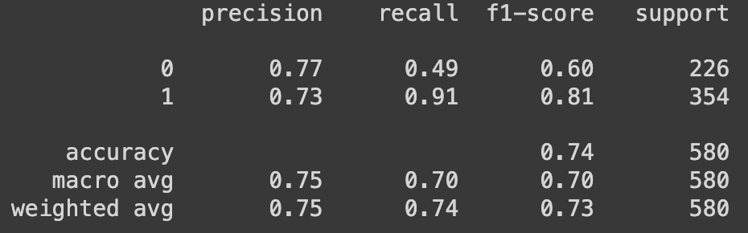

Results
LSTM Model For Sentiment Analysis
BERT Model For Sentiment Analysis
The LSTM model and BERT model were evaluated for sentiment classification, with distinct performance metrics across negative and positive sentiment classes. For the negative sentiment class, the LSTM model achieved a precision of 0.77, recall of 0.49, and an F1 score of 0.60, while the BERT model outperformed with higher precision (0.86), recall (0.80), and F1 score (0.83). This suggests that the BERT model is more adept at accurately identifying instances of negative sentiment. In the positive sentiment class, the LSTM model demonstrated a precision of 0.73, recall of 0.91, and an F1 score of 0.81, while the BERT model exhibited a lower precision (0.66), similar recall (0.74), and a marginally lower F1 score (0.70). Despite the BERT model's superiority in negative sentiment classification, the LSTM model showed stronger performance in identifying positive sentiments. Overall, the BERT model achieved a higher accuracy of 0.78 compared to the LSTM model's accuracy of 0.74, emphasizing its overall effectiveness in sentiment classification tasks. Therefore, the BERT Model is chosen to find sentiments of tweets that can is later used to build a model to predict stock movement.